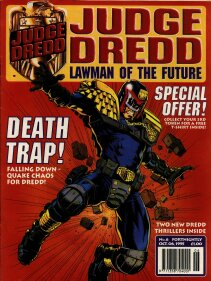
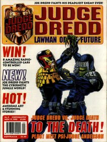
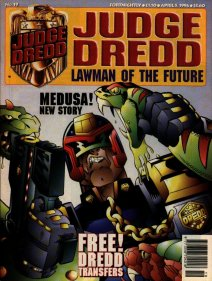
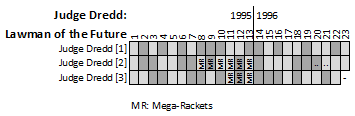
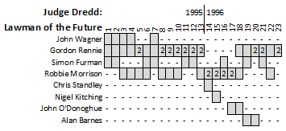
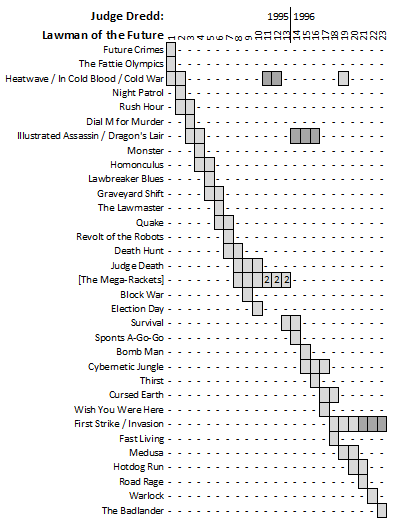

|  |  |  |
| Codpiece of Doom! by Jim Murray & Dondie Cox |
A Dance with Death! by Jim Murray & Dondie Cox |
Fang-tastic Action! by Paul Peart & Sean Barnes-Murphy |
The 1995 Judge Dredd movie (featuring Sylvester "Double Whammy" Stallone) spawned a spin-off comic aimed at younger readers: 2000 AD Regened Judge Dredd: Lawman of the Future!
Something of a poisoned chalice (especially in hindsight given the poor box office takings and terrible reviews), this required that artists adopt the design aesthetic of the movie, which had mostly ignored the comic and ploughed its own furrow (in the same way as one might decide to pass up a plow and instead use a spoon). The writers couldn't sit inside the canon Dredd continuity so instead did a series of best-of cover versions (like an Abba tribute act), slightly hamstrung by a need for the villains not to die (just like in the A-Team). This lead to clumsy injected dialog explaining that even though there was a huge explosion that "the perp will be fine".
Given that every story featured Judge Dredd, it's tricky to provide a clean overview. Each issue (except the final issue #23 in 1996) has three strips (discounting the one-pager that ran in issues #11-13). So, you could look at it as three slots of Judge Dredd, like so:
Alternatively, you might think of it as writer-driven, where John Wagner helps to launch things, but ultimately the majority of the strips are written by Gordon Rennie and Robbie Morrison (with honourable mentions for Simon Furman):
I've never read any Dredd:LotF so am loathe to speculate too much - but I wonder if it was a really useful place for Rennie and Morrison to get out their inner Dredd fanboys, re-hashing old Wagner/Grant ideas. Garth Ennis had to do his cover-version work in the main Prog, and still gets a lot of flak for it (at least, he does on the Drokk! podcast). Whereas Rennie especially but Morrison too already had their own Dredd voice going pretty early on in their days of writing Dredd for Meg and Prog.
Or, you might do a deep dive, and look at each individual story, but for a twenty-three issue run, (and depending how you count them) there were a hefty forty-five of those (with the longest linked set being Gordon Rennie's Mega-Mobs / Mega-Rackets sequence at nine episodes), leading to something of a well of data:
Apart from the movie-fied Judge uniform and the transforming Lawmaster (flying mode!), nothing from the screen version seems to have been used. There's no movie-Fergee, for example. Instead, the comic uses elements that would be easily familiar to most 2000 AD readers, with the first couple of episodes (re)introducing face-change machines, hotshot homing bullets, Stookies, Fatties, muties, Cadet Judges, The Academy of Law, Apetown, weather control and Zoom trains.
The borrowing from the canon is clear with stories like "Dial Mean for Murder" (the only story featuring Mean Angel, with two arms), "Revolt of the Robots" (after 1977's Robot Wars), "Graveyard Shift" (after 1983's, erm, The Graveyard Shift), "Death Hunt" (after 1985's The Hunters Club), and so on. The other really obvious ones are a three-part Judge Death, a long-form "Mega-Rackets" sequence and Hotdog Run. The problem here is that these stories have been told before, and better. There's arguably not much artistic value in making something that's "the same as but not as good as".
The original plan for what became LotF was better and more ambitious; an anthology of different stories set in a modified Dreddverse. There was obviously going to be a Dredd strip, but I was co-writing a junior Chopper strip, Robbie Morrison was doing a Cursed Earth Dirty Dozen thing, and there was going to be a Space War strip, maybe an Anderson one etc.
First episode scripts were written for a pilot issue, but I’m not sure I ever saw any art for this. Anyway, that plan died for reasons I don’t know/can’t remember, and it became a 100% Dredd thing instead.
There are longer-form stories where the writers add their own elements to the milieu. Simon Furman gives us the reptilian mutant Coldblood, who features in Heatwave, In Cold Blood and Cold War. Robbie Morrison gets to play with his murderous mutant with magic tattoos, Dragon, in Illustrated Assassin and Dragon's Lair. And Gordon Rennie takes us out to the end of the publishing cycle with the linked six-part mini-epic featuring an alien invasion of Mega-City One (with First Strike and Invasion).
Perhaps cursed from the outset as the spin-off of a risible Hollywood travesty, and now destined to compare unfavorably with both the 2012 movie and the subsequent spin-off Dredd stories in the Megazine, this twenty-three issue Judge Dredd remix will remain a curious footnote from the annals.